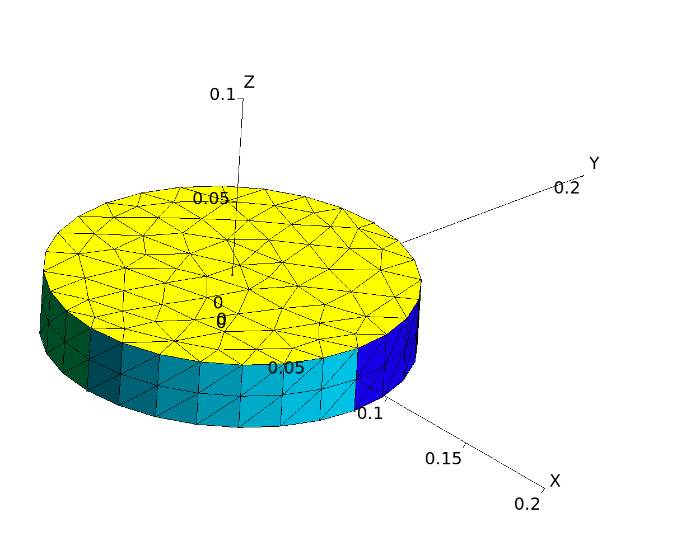
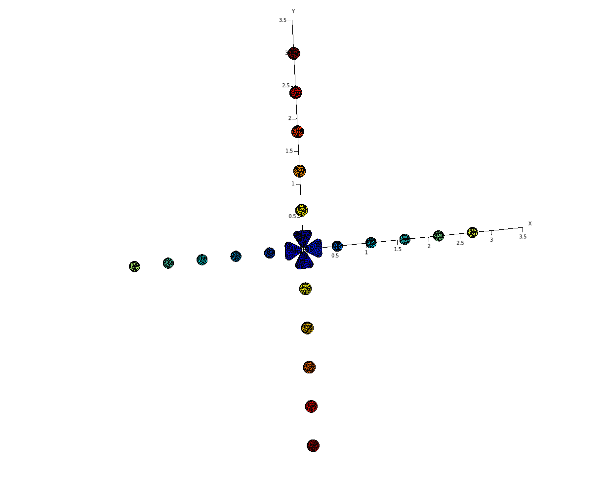
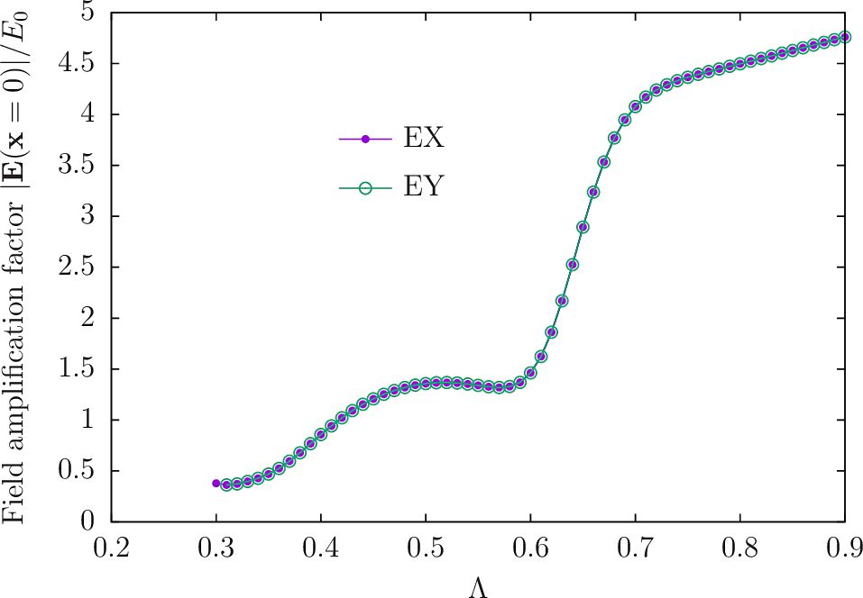
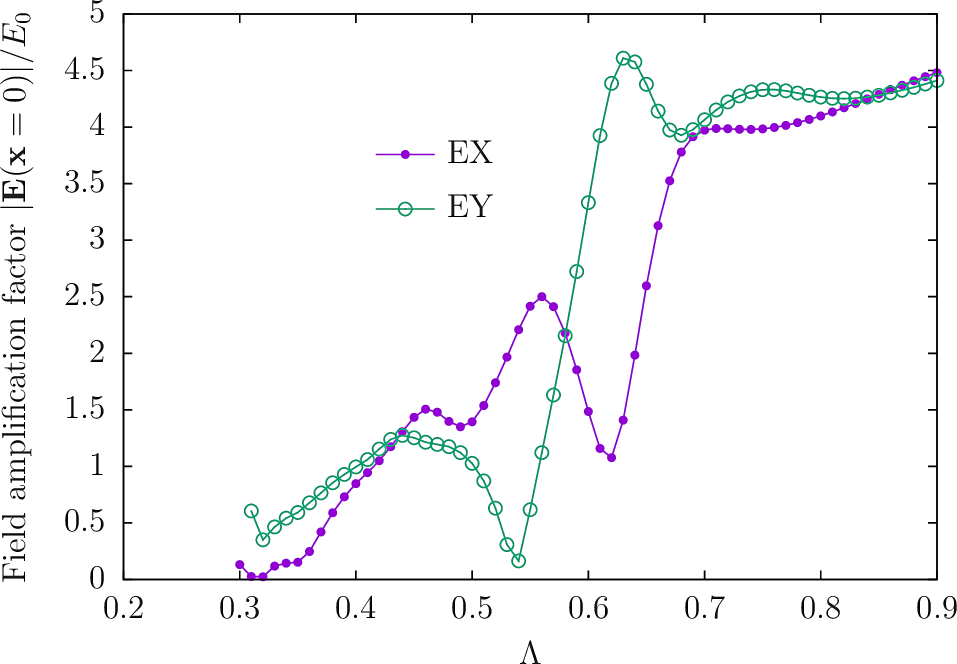

Polarization-dependent field amplification by bowtie antennas
For our next trick, we'll surround the 4-triangle bowtie antennas of the previous exercise
take a page from the following paper of Trevino et. al:
The files for this example are in the PolarizationSensitiveAntennas
subfolder of the
SCUFFTutorial archive.
% export SCUFF_MESH_PATH=${HOME}/SCUFFTutorial/Nanoparticles/mshFiles
% export SCUFF_GEO_PATH=${HOME}/SCUFFTutorial/Nanoparticles/scuffgeoFilesGMSH geometry and mesh files
We use the same thin triangle mesh as in the previous exercise,
but now augment this with a new
gmsh geometry file
named Disc.geo,
which describes a cylinder of user-tweakable height and radius.
Using this core geometry file, I produce meshes for
cylinders of thickness 30 nm and diameter {160, 185} nm
at medium and fine resolutions:
#!/bin/bash
GEOFILE=Disc.geo
BASE=D160Cylinder
ARGS="-2 -setnumber R 0.080 -setnumber T 0.03 ${GEOFILE}"
gmsh ${ARGS} -setnumber MeshScale 1.0 -o ${BASE}_Coarse.msh
gmsh ${ARGS} -setnumber MeshScale 0.75 -o ${BASE}_Medium.msh
gmsh ${ARGS} -setnumber MeshScale 0.5 -o ${BASE}_Fine.msh
GEOFILE=Disc.geo
BASE=D185Cylinder
ARGS="-2 -setnumber R 0.0925 -setnumber T 0.03 ${GEOFILE}"
gmsh ${ARGS} -setnumber MeshScale 1.0 -o ${BASE}_Coarse.msh
gmsh ${ARGS} -setnumber MeshScale 0.75 -o ${BASE}_Medium.msh
gmsh ${ARGS} -setnumber MeshScale 0.5 -o ${BASE}_Fine.msh
SCUFF-EM geometry files
BowtieDiscs5_Fine.scuffgeoOBJECT NorthTriangle
MESHFILE Triangle_Fine.msh
DISPLACED 0.00 0.030 0.000
ENDOBJECT
OBJECT SouthTriangle
MESHFILE Triangle_Fine.msh
ROTATED 180 ABOUT 0 0 1
DISPLACED 0.00 -0.030 0.000
ENDOBJECT
OBJECT WestTriangle
MESHFILE Triangle_Fine.msh
ROTATED 90 ABOUT 0 0 1
DISPLACED -0.030 0.000 0.000
ENDOBJECT
OBJECT EastTriangle
MESHFILE Triangle_Fine.msh
ROTATED 270 ABOUT 0 0 1
DISPLACED 0.030 0.000 0.000
ENDOBJECT
OBJECT XM1Cylinder
MESHFILE D160Cylinder_Fine.msh
DISPLACED -0.540 0.0 0.0
ENDOBJECT
OBJECT XP1Cylinder
MESHFILE D160Cylinder_Fine.msh
DISPLACED 0.540 0.0 0.0
ENDOBJECT
OBJECT XM2Cylinder
MESHFILE D160Cylinder_Fine.msh
DISPLACED -1.080 0.0 0.0
ENDOBJECT
OBJECT XP2Cylinder
MESHFILE D160Cylinder_Fine.msh
DISPLACED 1.080 0.0 0.0
ENDOBJECT
OBJECT XM3Cylinder
MESHFILE D160Cylinder_Fine.msh
DISPLACED -1.620 0.0 0.0
ENDOBJECT
OBJECT XP3Cylinder
MESHFILE D160Cylinder_Fine.msh
DISPLACED 1.620 0.0 0.0
ENDOBJECT
OBJECT XM4Cylinder
MESHFILE D160Cylinder_Fine.msh
DISPLACED -2.160 0.0 0.0
ENDOBJECT
OBJECT XP4Cylinder
MESHFILE D160Cylinder_Fine.msh
DISPLACED 2.160 0.0 0.0
ENDOBJECT
OBJECT XM5Cylinder
MESHFILE D160Cylinder_Fine.msh
DISPLACED -2.700 0.0 0.0
ENDOBJECT
OBJECT XP5Cylinder
MESHFILE D160Cylinder_Fine.msh
DISPLACED 2.700 0.0 0.0
ENDOBJECT
OBJECT YM1Cylinder
MESHFILE D185Cylinder_Fine.msh
DISPLACED 0.0 -0.600 0.0
ENDOBJECT
OBJECT YP1Cylinder
MESHFILE D185Cylinder_Fine.msh
DISPLACED 0.0 0.600 0.0
ENDOBJECT
OBJECT YM2Cylinder
MESHFILE D185Cylinder_Fine.msh
DISPLACED 0.0 -1.200 0.0
ENDOBJECT
OBJECT YP2Cylinder
MESHFILE D185Cylinder_Fine.msh
DISPLACED 0.0 1.200 0.0
ENDOBJECT
OBJECT YM3Cylinder
MESHFILE D185Cylinder_Fine.msh
DISPLACED 0.0 -1.800 0.0
ENDOBJECT
OBJECT YP3Cylinder
MESHFILE D185Cylinder_Fine.msh
DISPLACED 0.0 1.800 0.0
ENDOBJECT
OBJECT YM4Cylinder
MESHFILE D185Cylinder_Fine.msh
DISPLACED 0.0 -2.400 0.0
ENDOBJECT
OBJECT YP4Cylinder
MESHFILE D185Cylinder_Fine.msh
DISPLACED 0.0 2.400 0.0
ENDOBJECT
OBJECT YM5Cylinder
MESHFILE D185Cylinder_Fine.msh
DISPLACED 0.0 -3.000 0.0
ENDOBJECT
OBJECT YP5Cylinder
MESHFILE D185Cylinder_Fine.msh
DISPLACED 0.0 3.000 0.0
ENDOBJECT
Run calculation in SCUFF-SCATTER
RunScript.EXEY#!/bin/bash
BASEDIR=${HOME}/SCUFFTutorial/PolarizationSensitiveAntenna
export SCUFF_MESH_PATH=${BASEDIR}/mshFiles
export SCUFF_GEO_PATH=${BASEDIR}/scuffgeoFiles
for GEOM in Bowtie_Fine BowtieDiscs5_Fine
do
ARGS=""
ARGS="${ARGS} --geometry ${GEOM}.scuffgeo"
ARGS="${ARGS} --LambdaFile ${BASEDIR}/LambdaFile"
ARGS="${ARGS} --EPFile ${BASEDIR}/EPFiles/HotSpot"
ARGS="${ARGS} --IFFile ${BASEDIR}/IFFile"
scuff-scatter ${ARGS}
doneField amplification vs. incident-field polarization without discs

Field amplification vs. incident-field polarization with discs
